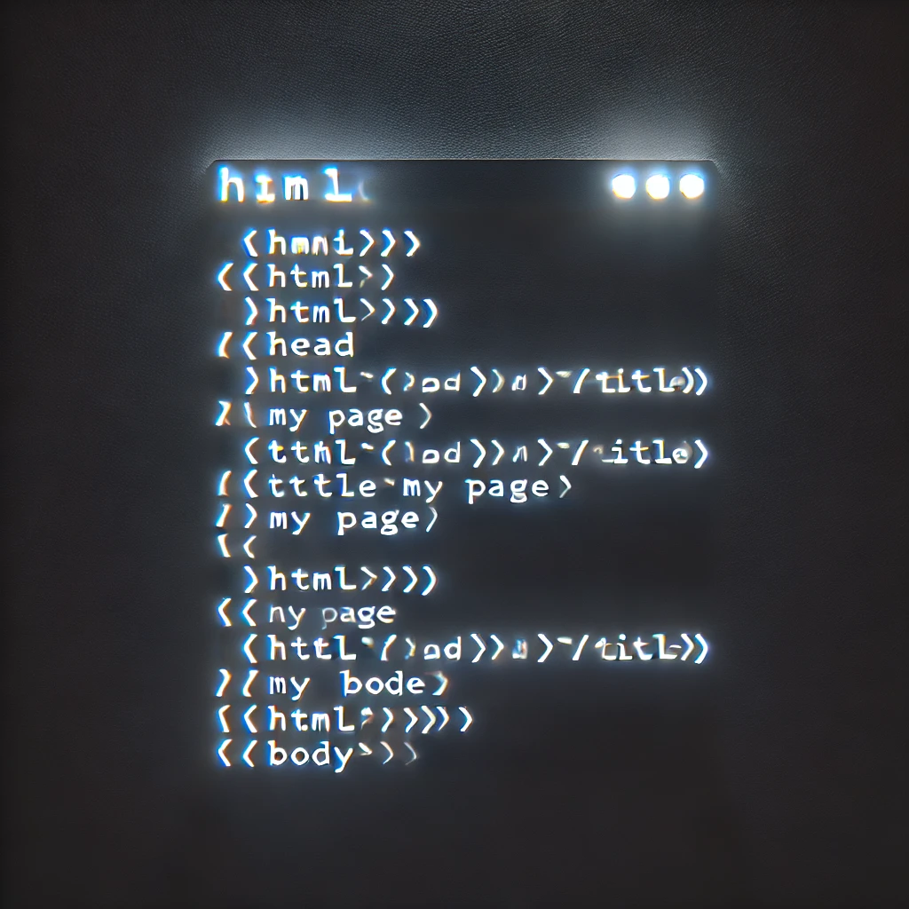

My Projects

Personal Website Lab
Built a fully responsive personal website from scratch using HTML, CSS, and Bootstrap. Key features include:
- Multi-page layout: Home, Hobbies, Projects, and Résumé pages, all sharing a consistent navbar and footer.
- Responsive design: Utilized Bootstrap’s grid and utility classes so the site adapts beautifully from mobile to desktop.
- Custom styling: Added a personal color palette and typography in an external
style.css, layered on top of Bootstrap’s defaults. - Interactive components: Implemented a carousel on the Projects page, card decks for hobbies, and a hero section with a circular profile image.
- Version control & deployment: Managed with Git, pushed to GitHub, and deployed using GitHub Pages.

Linux-like File System Simulator
Built a simulated Linux file system in C++ using hash tables to manage inodes and directory entries. Supports core UNIX commands and metadata operations.
- File operations: create, open, read, write, delete, seek.
- Directory management: ls, mkdir, rmdir, cd.
- Metadata handling: simulated inodes, superblock, and block allocation via hash tables.
- Permissions: UNIX-style read/write/execute bits and user/group ownership.